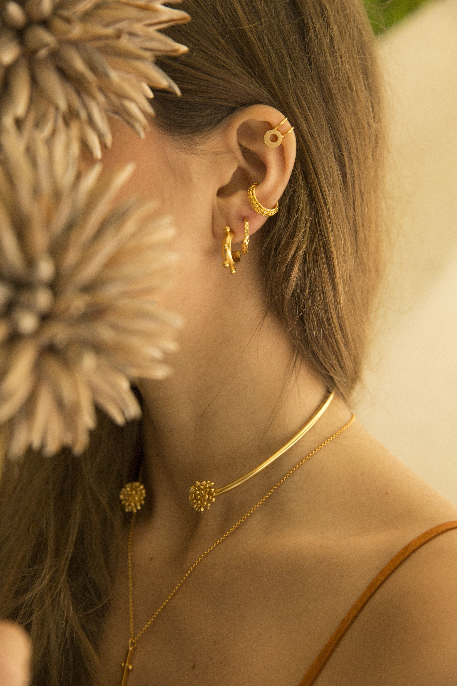

Seashell Jewelry
Seashell jewelry is a timeless summer trend that adds a touch of the ocean to any outfit. From delicate pendants to statement earrings, seashell come in a variety of shapes and sizes, making it easy to find a piece that suits your style. Whether you prefer natural shells or those that have been adorned with beads or pearls, seashell jewelry is a must-have accessory for any beach lover.